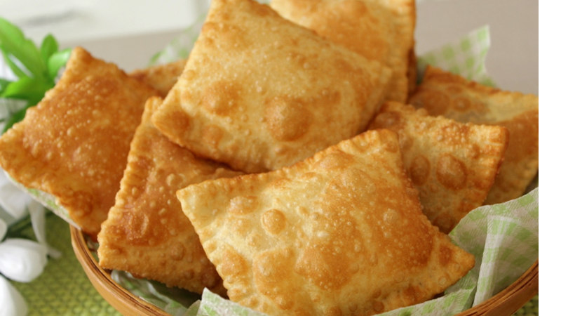
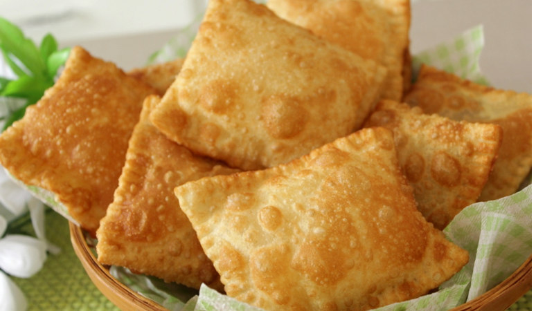
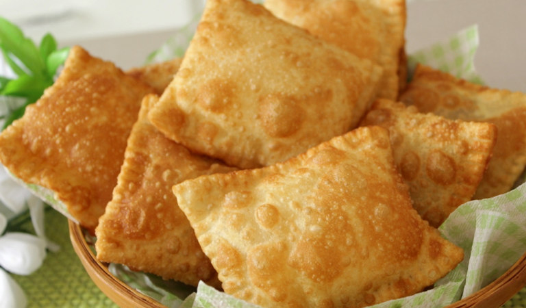

Brazilian cuisine is a melting pot of different nations dishes, comprising of European, Native, African, and Japanese influences. This combination comes about due to the rich mixed history of Brazil. Lots of unique and delicious dishes can be found in Brazilian restaurants and bakeries, and the variety is heightened even further across the different regions in Brazil, with each state having a distinct culinary identity.
